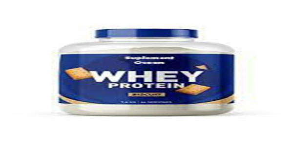
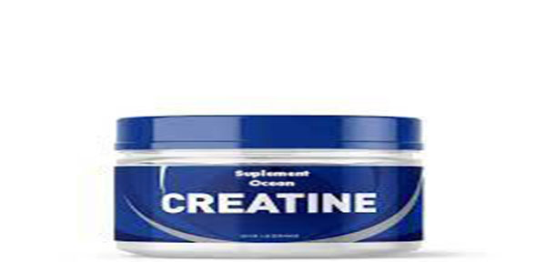
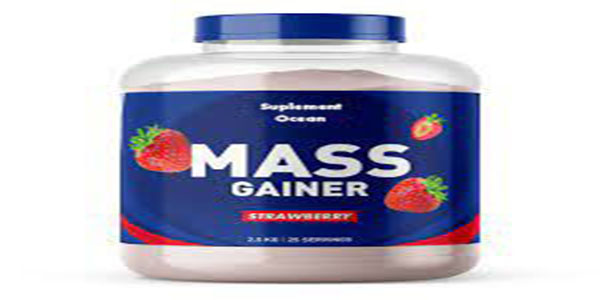
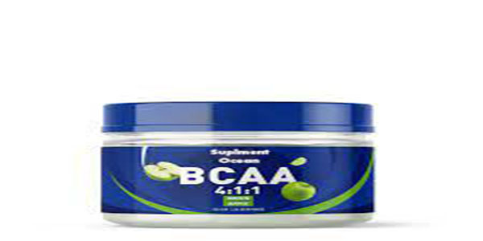
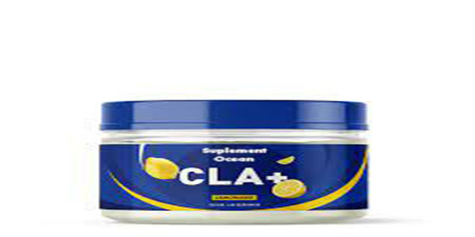

1 / 5

Whey protein, yağların yakılmasına destek olur ve kas kütlesini korur. Kas gücünde ve yağsız kas kütlesinin hacminde artış sağlar. Avustralya'da yapılan bir araştırmada, whey proteinin iştah azalttığı görülmüştür. Yiyeceklerin protein değerini arttırır.
2 / 5

Kreatin tanımı hücrelere ve kaslara enerji akışına katkı sağlayan bir bileşendir. Organik asit olan kreatin, balık veya kırmızı et gibi temel besin öğelerinden karşılanabilir. Yaşlı kişilerde veya spor yapan kişilerde vücuttaki kas oranının artışına katkı sağlar.
3 / 5

Gainer, kısaca kalorili protein tozuna verilen isimdir. Gainer çeşitleri; karbonhidrat, protein ve yağ içerdiği için bu ürünler, kişilerin günlük kalori ihtiyacını karşılar. Bu sebeple bir besin takviyesi olarak da nitelendirilir.
4 / 5

BCAA'lar; kas yorgunluğunu azaltır, iyileşme dönemini hızlandırır ve antrenman sırasında kaslardan amino asit kaybını önleyerek vücudun daha iyi protein absorbe etmesini sağlar. Valin, izolösin ya da lösinden herhangi biri vücutta yeterli seviyede yoksa, kas kaybı oluşacaktır.
5 / 5

CLA Nedir? CLA, et ve süt ürünlerinde bulunan ve doğal olarak oluşan bir yağ asididir. Aynı zamanda, insanların yağ kaybetmesine, kilo kaybını sürdürmesine, yağsız kas kütlesini korumasına ve kontrol etmesine yardımcı olan popüler bir besin takviyesidir.
❮
❯